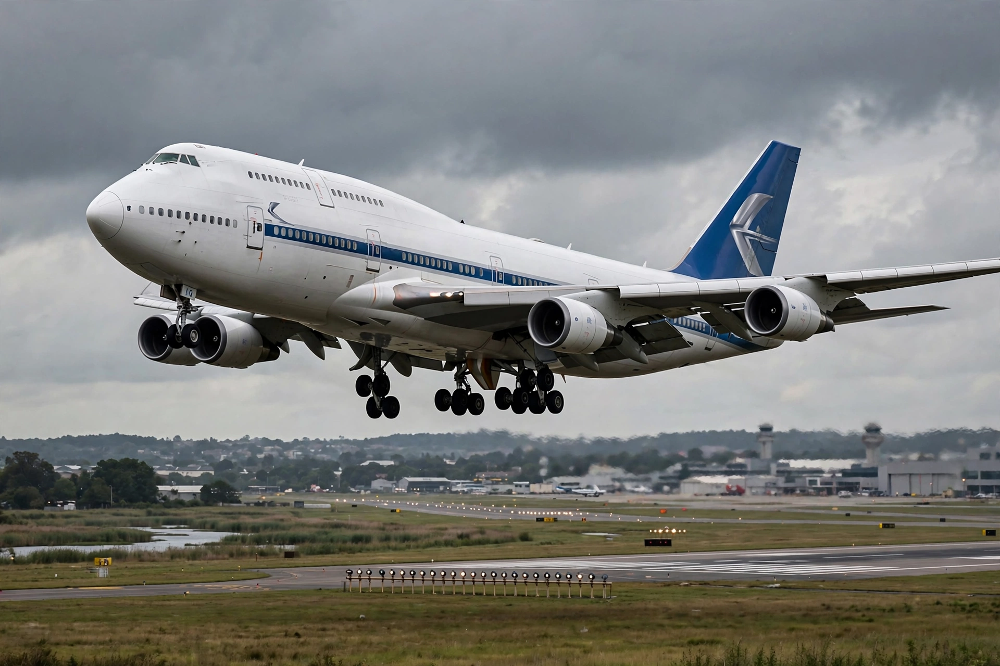

Boeing 747
From Wikipedia, the free encyclopedia

A Boeing 747-400 on final approach.The Boeing 747 is a long-range wide-body airliner designed and manufactured by Boeing in the United States. Nicknamed the \'Jumbo Jet\' and \'Queen of the Skies\', it was the first wide-body airliner, recognisable by its partial upper deck and hump. Entering service with Pan Am in 1970, it held the passenger capacity record for 37 years until the Airbus A380, and over 1,500 were built before production ended in 2023.
Development
Pan Am\'s Juan Trippe sought an airliner far larger than the 707; Joe Sutter\'s team designed the 747, and Boeing built the enormous Everett factory to assemble it. The first flight was on 9 February 1969. Four engines (initially Pratt & Whitney JT9Ds) and a high wing with 37.5° sweep gave cruise speeds around Mach 0.85.
Variants and service
The 747-100 was followed by the improved -200, the stretched-upper-deck -300, and the fly-by-wire 747-400 (1989), the best-seller. The final 747-8 (2011) uses 787-derived engines. Special versions include Air Force One (VC-25), the Shuttle Carrier Aircraft and the 747 Supertanker firefighter.
Decline and legacy
Efficient twin-engine jets (777, A350) undercut four-engine economics, and passenger 747s were largely retired, accelerated by the COVID-19 pandemic. Freighters remain prized for nose-loading capacity; the last 747, a cargo aircraft for Atlas Air, was delivered in January 2023.